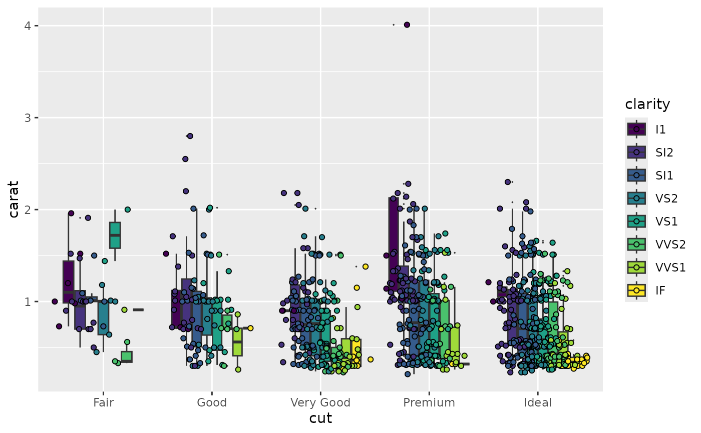

This is primarily used for aligning points generated through
geom_point() with dodged boxplots (e.g., a geom_boxplot() with
a fill aesthetic supplied).
position_jitterdodge(jitter.width = NULL, jitter.height = 0, dodge.width = 0.75, seed = NA)
| jitter.width | degree of jitter in x direction. Defaults to 40% of the resolution of the data. |
|---|---|
| jitter.height | degree of jitter in y direction. Defaults to 0. |
| dodge.width | the amount to dodge in the x direction. Defaults to 0.75,
the default |
| seed | A random seed to make the jitter reproducible.
Useful if you need to apply the same jitter twice, e.g., for a point and
a corresponding label.
The random seed is reset after jittering.
If |
Other position adjustments: position_dodge,
position_identity,
position_jitter,
position_nudge,
position_stack
dsub <- diamonds[ sample(nrow(diamonds), 1000), ] ggplot(dsub, aes(x = cut, y = carat, fill = clarity)) + geom_boxplot(outlier.size = 0) + geom_point(pch = 21, position = position_jitterdodge())